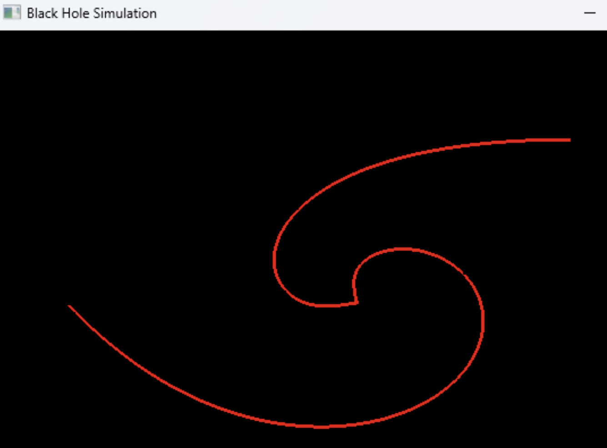
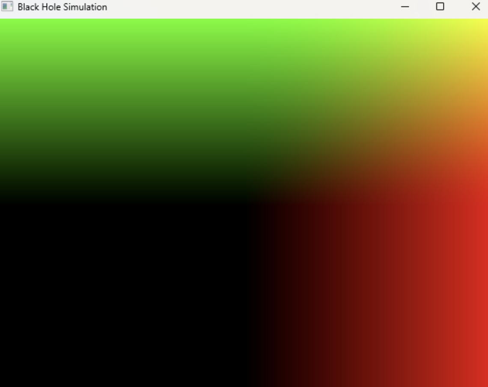
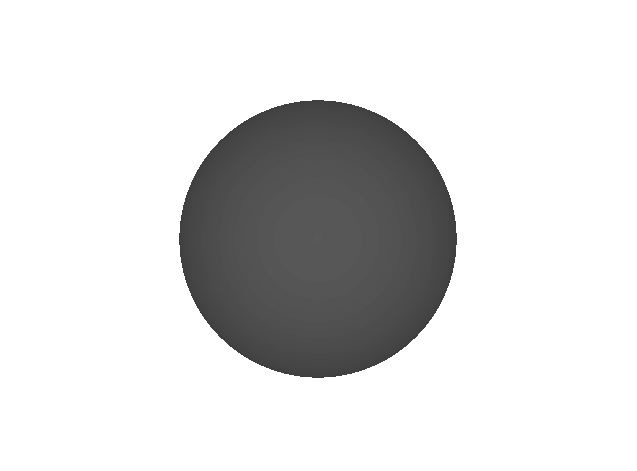

Progress Summary
To begin with, the majority of our progress this week has been through researching the different dependencies we need, as well as the different physics equations. This includes looking into how we want to represent the accretion disk, which we determined will be with a textured disk, as well as looking more into methods like 4th-order Runge-Kutta. Although challenging, we believe it will make the rest of the project much easier. Additionally, we've managed to set up our OpenGL project and connect useful libraries like GLFW, GLAD, and GLM. With these tools, the current functionality of our project allows us to open a window and draw a quad that fully encompasses the screen. This enables us to use the fragment shader we have for ray marching. Finally, through the use of basic ray tracing techniques and the GLM framework, we were also able to draw rays onto the screen and perform a simple ray integrations.
Preliminary Results
|

|

|

|
Our preliminary results includes a simple ray integration display, which the rays curving inwards towards the center of the screen. This involved using both the inverse square law and euler's method. While it may not be completely accurate to a blackhole, it allowed us to experiment with ray tracing setup. Our other two results involve our fragment shader and ray marching. Using these techniques, we were able to generate images such as the center one which tracked the rays and depicted a color based on how far they travelled. The other image represents a ray-marched black hole, similar to what our final project would contain.
Reflections
Overall, we are pretty satisfied with the progress we've made so far relative to our plan. While we were massively over optimistic with how much we could get done, we also done a lot of the foundational work, such as research and set up, that our future features would be built on top of. However, it does mean that in the upcoming week we will have to catch up on the previous tasks which we planned for last week.
Updated Workplan
To be more realistic, from 8/4 - 8/7, we will be focusing solely on implementing the accretion disk, implementing the 4-th order Runge-Kutta method, and working on our final slides. From 8/7 - 8/11, we will finalize our ray marching algorithm, render simulations, and if possible, add interactivity and moving objects. After that, everything remains the same.